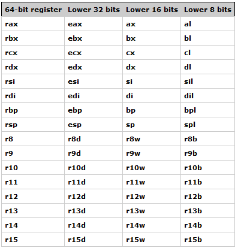

# x64 Registers
In x64 assembly all of the registers have been extended to be 64bits in size (instead of 32).
There are also more registers in total.
The new registers are:
r8
r9
r10
r11
r12
r13
r14
r15To reference the lower 32bits of these registers -
d is used
To reference the lower 16bits of these registers -
w is used
And to reference the lower 8bits -
b is used
